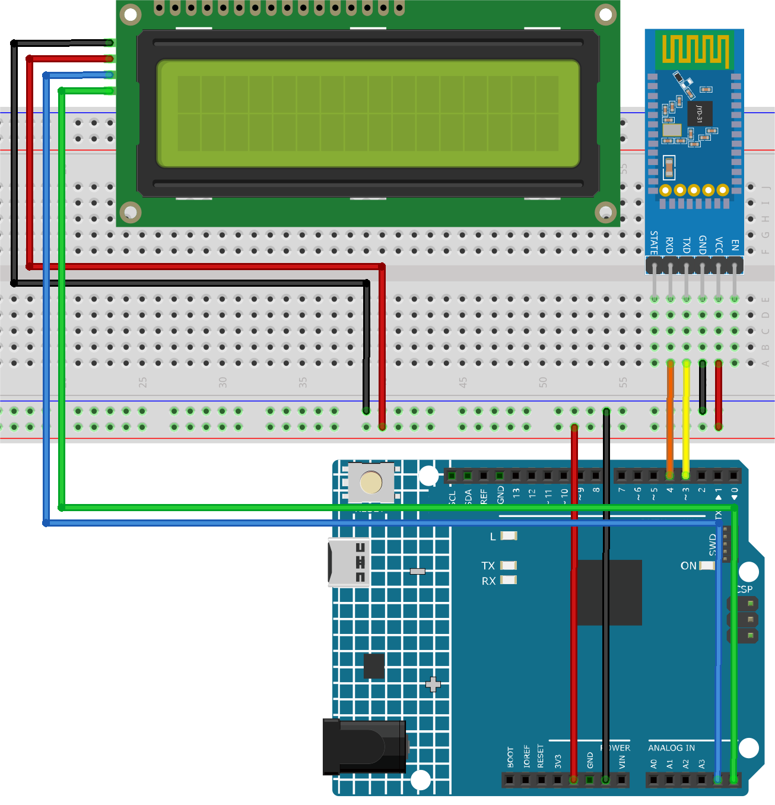
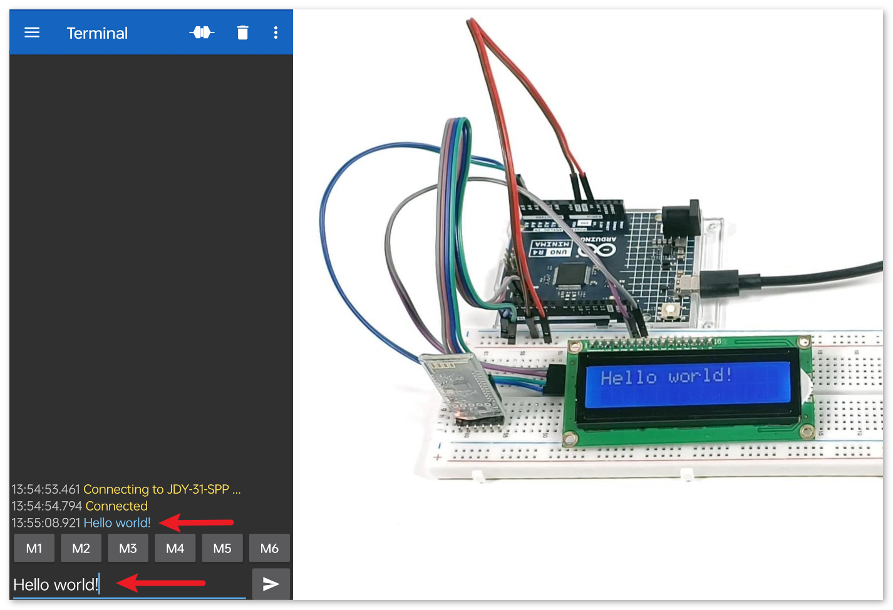

注釈
こんにちは、SunFounderのRaspberry Pi & Arduino & ESP32愛好家コミュニティへようこそ！Facebook上でRaspberry Pi、Arduino、ESP32についてもっと深く掘り下げ、他の愛好家と交流しましょう。
参加する理由は？
エキスパートサポート：コミュニティやチームの助けを借りて、販売後の問題や技術的な課題を解決します。
学び＆共有：ヒントやチュートリアルを交換してスキルを向上させましょう。
独占的なプレビュー：新製品の発表や先行プレビューに早期アクセスしましょう。
特別割引：最新製品の独占割引をお楽しみください。
祭りのプロモーションとギフト：ギフトや祝日のプロモーションに参加しましょう。
👉 私たちと一緒に探索し、創造する準備はできていますか？[ここ]をクリックして今すぐ参加しましょう！
Bluetooth LCD
このプロジェクトでは、UNOボードに接続されたBluetoothモジュールを通じてメッセージを受信し、そのメッセージをLCD画面に表示します。
1. 回路の構築


2. コードのアップロード
ultimate-sensor-kit\iot_project\bluetooth\01-Bluetooth_lcdのパスにある01-Bluetooth_lcd.inoファイルを開くか、このコードを Arduino IDE にコピーアンドペーストしてください。注釈
ライブラリをインストールするには、Arduinoライブラリマネージャーで "LiquidCrystal I2C" と検索してインストールしてください。
適切なボードとポートを選択した後、 書き込み ボタンをクリックします。
シリアルモニターを開き（ボーレートは 9600 に設定）、デバッグメッセージを確認します。
3. アプリとBluetoothモジュールの接続
"Serial Bluetooth Terminal"というアプリを使って、BluetoothモジュールからArduinoへメッセージを送ることができます。
Serial Bluetooth Terminalのインストール
Google Playから、 シリアルBluetoothターミナル をダウンロードしてインストールします。
Bluetoothの接続
まず初めに、スマートフォンの Bluetooth をオンにします。

スマートフォンの Bluetooth設定 に進み、 JDY-31-SPP のような名前を探します。

見つけたら、表示されるポップアップで ペアリング を承認します。ペアリングコードが必要な場合は、「1234」と入力してください。

Bluetoothモジュールとの通信
Serial Bluetooth Terminalを開いて、"JDY-31-SPP"に接続します。

コマンドの送信
Serial Bluetooth Terminalアプリを使用して、Bluetooth経由でArduinoにメッセージを送ります。送信されたメッセージはLCDに表示されます。


4. コードの解説
注釈
ライブラリをインストールするには、Arduinoライブラリマネージャーで "LiquidCrystal I2C" と検索し、該当するライブラリをインストールしてください。
LCDの設定
#include <LiquidCrystal_I2C.h> LiquidCrystal_I2C lcd(0x27, 16, 2);
このコード断片では、LiquidCrystal_I2Cライブラリをインクルードし、I2Cアドレスを
0x27、LCDの列数を16、行数を2で初期化します。Bluetooth通信の設定
#include <SoftwareSerial.h> const int bluetoothTx = 3; const int bluetoothRx = 4; SoftwareSerial bleSerial(bluetoothTx, bluetoothRx);
この部分でSoftwareSerialライブラリをインクルードし、JDY-31 BluetoothモジュールがArduinoと通信できるように、ピン3（TX）とピン4（RX）を指定しています。
初期設定
void setup() { lcd.init(); lcd.clear(); lcd.backlight(); Serial.begin(9600); bleSerial.begin(9600); }
setup()関数では、LCDを初期化し、既存の内容をクリアします。また、LCDのバックライトを点灯します。シリアルモニターとBluetoothモジュールの通信も、ボーレート9600で開始されます。メインループ
void loop() { String data; if (bleSerial.available()) { data += bleSerial.readString(); data = data.substring(0, data.length() - 2); Serial.print(data); lcd.clear(); lcd.setCursor(0, 0); lcd.print(data); } if (Serial.available()) { bleSerial.write(Serial.read()); } }
これがArduinoプログラムの主要な動作ループです。Bluetoothモジュールとシリアルモニターからの入力データを継続的にチェックします。Bluetoothデバイスからデータが受信されると、それを処理し、シリアルモニターとLCDに表示します。シリアルモニターにデータが入力されると、そのデータはBluetoothモジュールに送信されます。